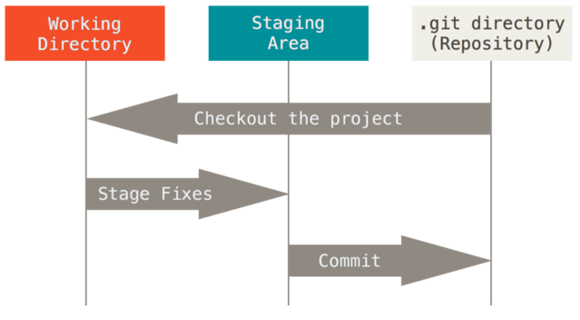
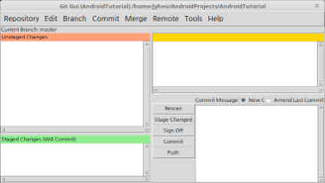
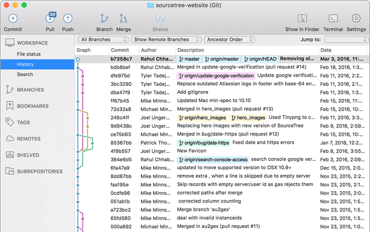
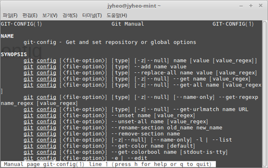
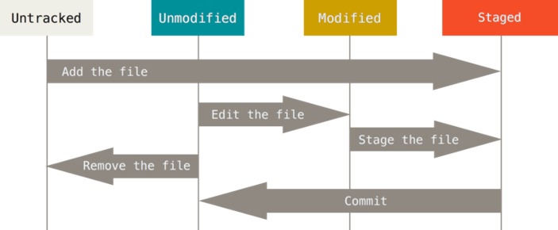

layout: true .top-line[] --- class: center, middle # Git 기초 허준영(jyheo@hansung.ac.kr) --- ## Git * 여러 사람이 동일한 문서(소스 코드)에 대해 동시에 작업을 해야할 때 * 상대방의 작업을 방해하지 않으면서 * 효율적으로 작업할 수 있도록 도와줌 * Distributed Version Control System(분산 버전 제어 시스템) - 문서(소스 코드) 버전 관리(변경 이력 관리) - 분산형 시스템: 개인 저장소와 공유 저장소 --- ## Git * 작업 공간 Working directory - 편집할 파일(소스 코드)이 저장되어 있는 디렉터리 * 스테이지 Staging Area - 저장소(Repository)로 변경 내역을 저장하기 위한 파일들의 목록 * 저장소 Repository - 로컬 저장소: 보통 작업 공간에 .git 라는 이름의 디렉터리로 존재, 변경 내역이 저장되는 곳 - 원격 저장소: 여러 사용자가 공유하는 저장소 + Github, Bitbucket --- ## Git * Git에서 보는 파일의 세가지 상태 - Modified, Staged, Committed  .footnote[출처: https://git-scm.com/book/en/v2/Getting-Started-Git-Basics] --- ## Git 설치 * 다운로드: https://git-scm.com/download * 리눅스의 경우 배포판에 따라 - 데비안 계열: $ sudo apt-get install git-all - Fedora 배포판: $ sudo yum install git-all * GUI: git-gui, SourceTree  --- ## Git 설정 * 사용자 설정 - $ git config --global user.name "John Doe" - $ git config --global user.email johndoe@example.com - ‘--global’을 빼면 저장소마다 별도로 설정할 수 있음 - **공용 실습 컴퓨터에서 조심!** * $ git config --list ```bash gui.recentrepo=/home/jyheo/pywsn gui.recentrepo=/home/jyheo/AndroidProjects/AndroidTutorial user.email=jyheo0@gmail.com user.name=Junyoung Heo core.autocrlf=input ``` --- ## Git help * $ git help * $ git help config -  --- ## Git 저장소 만들기 * 로컬 디렉터리에 저장소 새로 만들기(git init) ```bash $ mkdir my_proj $ cd my_proj/ $ ls $ `git init` Initialized empty Git repository in /home/jyheo/my_proj/.git/ $ ls $ ls -a . .. .git ``` * 원격 서버 저장소에서 복제해오기(git clone [원격 주소]) ```bash $ `git clone https://github.com/jyheo/test` Cloning into 'test'... remote: Counting objects: 46, done. remote: Total 46 (delta 0), reused 0 (delta 0), pack-reused 46 Unpacking objects: 100% (46/46), done. Checking connectivity... done. $ cd test $ ls LICENSE README.md fork_pull_request.c ``` --- ## 변경 이력 저장하기 * 작업 디렉터리 내의 파일 Untracked/Tracked * Tracked 파일: Unmodified(Committed), Modified, Staged * $ git status  .footnote[출처: https://git-scm.com/book/en/v2/Git-Basics-Recording-Changes-to-the-Repository] --- ## 변경 이력 저장하기 * 새 파일 생성, tracked-staged로 변경 ```bash $ echo "newfile" > newfile $ `git status` On branch master Your branch is up-to-date with 'origin/master'. Untracked files: (use "git add <file>..." to include in what will be committed) newfile nothing added to commit but untracked files present (use "git add" to track) ``` ```bash $ `git add newfile` $ `git status` On branch master Your branch is up-to-date with 'origin/master'. Changes to be committed: (use "git reset HEAD <file>..." to unstage) new file: newfile ``` --- * tracked인 기존 파일 수정, staged로 변경, ```bash $ vi README.md $ `git status` On branch master Your branch is up-to-date with 'origin/master'. Changes to be committed: (use "git reset HEAD <file>..." to unstage) new file: newfile Changes not staged for commit: (use "git add <file>..." to update what will be committed) (use "git checkout -- <file>..." to discard changes in working directory) modified: README.md ``` ```bash $ `git add README.md` $ `git status` On branch master Your branch is up-to-date with 'origin/master'. Changes to be committed: (use "git reset HEAD <file>..." to unstage) modified: README.md new file: newfile ``` --- ## 변경 이력 저장하기 * staged에서 committed로 변경 - 변경된 파일과 커맨트가 로컬 저장소에 저장됨 * $ git commit 또는 $ git commit -m “커맨트” ```bash $ `git commit -m "test"` [master db3f718] test 2 files changed, 2 insertions(+) create mode 100644 newfile $ `git status` On branch master Your branch is ahead of 'origin/master' by 1 commit. (use "git push" to publish your local commits) nothing to commit, working directory clean ``` --- ## 변경 이력 저장하기 * 파일 삭제 - $ rm [파일 이름] 실제로 파일 삭제 - $ git rm [파일 이름] 삭제한 파일을 staged - $ git commit 삭제한 파일 committed * 파일 이름 변경 - $ git mv [파일 이름] [새 파일 이름] - $ git commit * Staged/Committed를 동시에 - $ git commit -a -m “커맨트” --- ## 변경 이력 저장하기 * $ git diff - Modified 파일의 변경된 부분을 보여줌 * $ git diff –staged - Staged 파일의 변경된 부분을 보여줌 * .gitignore - git이 자동으로 tracked하지 않을 파일들을 지정 ```txt # no .a files *.a # but do track lib.a, even though you're ignoring .a files above !lib.a # only ignore the TODO file in the current directory, not subdir/TODO /TODO # ignore all files in the build/ directory build/ # ignore doc/notes.txt, but not doc/server/arch.txt doc/*.txt # ignore all .pdf files in the doc/ directory doc/**/*.pdf ``` --- ## Git 히스토리 * $ git log * GUI 버전 권장! <img src="images/history.png"> --- ## 실수 바로잡기 * 같이 Commit해야 할 파일을 실수로 빼고 commit 했을 때: - $ git commit --amend ```bash $ `git commit -m "test"` $ `git add forgotten` $ `git commit --amend` [master 26f6884] test Date: Tue Jan 3 06:09:27 2017 +0900 3 files changed, 2 insertions(+) create mode 100644 forgotten create mode 100644 newfile ``` --- ## 실수 바로잡기 * Staged를 되돌리기 - $ git reset HEAD [파일 이름] ```bash $ `git add newfile2` $ `git status` On branch master Your branch is ahead of 'origin/master' by 1 commit. (use "git push" to publish your local commits) Changes to be committed: (use "git reset HEAD <file>..." to unstage) . new file: newfile2 . $ `git reset HEAD newfile2` $ `git status` On branch master Your branch is ahead of 'origin/master' by 1 commit. (use "git push" to publish your local commits) Untracked files: (use "git add <file>..." to include in what will be committed) . newfile2 . nothing added to commit but untracked files present (use "git add" to track) ``` --- ## 실수 바로잡기 * Modified를 마지막 Commit 버전으로 되돌리기 - $ git checkout -- [파일 이름] ```bash $ `git status` On branch master Your branch is ahead of 'origin/master' by 1 commit. (use "git push" to publish your local commits) Changes not staged for commit: (use "git add <file>..." to update what will be committed) (use "git checkout -- <file>..." to discard changes in working directory) . modified: newfile . no changes added to commit (use "git add" and/or "git commit -a") $ `git checkout -- newfile` $ `git status` On branch master Your branch is ahead of 'origin/master' by 1 commit. (use "git push" to publish your local commits) nothing to commit, working directory clean ``` --- ## Stash * Commit을 하긴 좀 부족하고, 다른 브랜치 작업은 해야겠고. * Stash는 Modified이면서 Tracked 상태인 파일과 Staged 상태인 파일들을 보관해두는 장소 - Staged 상태 파일들은 복구될 때 Staging Area에서 내려감 * 아직 끝나지 않은 수정사항을 스택에 잠시 저장했다가 나중에 다시 적용할 수 있음 ```bash $ `git stash` [Commit하지 않은 파일들을 보관] $ `git stash apply` [보관한 파일들을 복구] $ `git stash drop` [보관 장소 제거] ``` --- ## Tagging * 태깅 – 태그 달기 - Annotated Tag: 태거 이름, 이메일, 날짜, 커맨트 등을 함께 저장, -a 옵션 사용 - Lightweight Tag: 단순 태깅 - $ git tag [-a] [태그 이름] [기타 옵션] ```bash $ `git tag` $ `git tag -a v1.0 -m "my version 1.0"` $ `git tag` v1.0 $ `git tag v1.0-lw` $ `git tag` v1.0 v1.0-lw ``` --- * Exercise * 로컬 저장소를 생성한다.(git init) * .gitignore 파일을 만들고 .o와 a.out을 넣는다. * .gitignore 파일을 staged/committed 한다. * main.c 파일을 만들고 staged/committed 한다. (이후 main.c를 수정할 때마다 gcc로 컴파일 한다.) * main.c 파일에 main() 함수를 추가하고 staged/committed 한다. * 태깅을 해본다. 태그 이름은 v1.0 으로 하자. * main.c 파일에 multiplication_table() 함수를 추가하고 staged/committed 한다. (구구단 함수) * main.c 파일 main() 함수에서 multiplication_table() 함수를 호출하도록 수정하고 staged/committed 한다. * main.c 파일을 임의로 수정한다. * git diff 를 해본다. * main.c 파일을 마지막 committed 상태로 되돌린다. * 히스토리를 살펴본다.